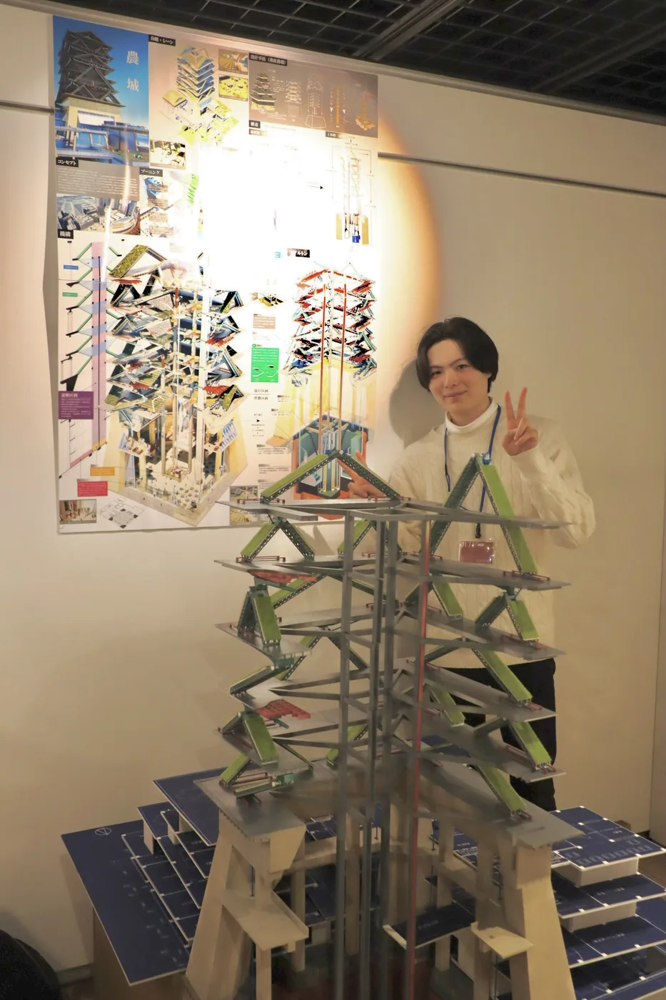

卒業設計
赤れんが卒業設計展2025 100選
3人チームのリーダーとして、コンセプトから設計、モデリング、模型制作までを指揮しました。※掲載しているのは全て自分自身で担当＆作成した部分です。
簡単な説明
日本の食料自給率改善のため、農業に経済資本誘致と技術投資を呼び込むため、丸の内に垂直農場×VC拠点を設計。垂直農場は丸の内（二の丸内側）にちなんで江戸城をモチーフに、現代のテクノロジーで再解釈した。地下プールの水荷重と、ワイヤー構造によって、日射角度に合わせて各階高が変化する「動く建築」を実現。
赤れんが卒業設計展2025（横浜赤レンガ倉庫1号館）では、実際に上下する機構を盛り込んだ断面模型を3Dプリンターを駆使して作成。訪問者に手で触れて機構を楽しんでもらった。全国公募・約1,000エントリーの中から、本展で100選に選出。
